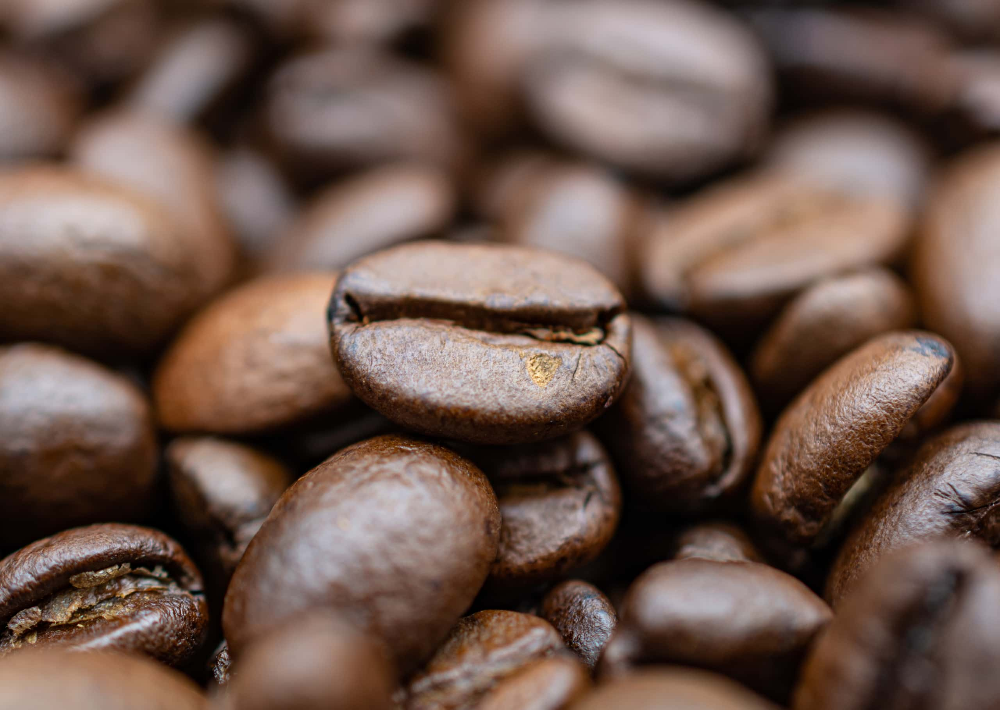

Arabica
Origin and Growth Conditions:
Arabica coffee beans are native to the highlands of Ethiopia and are now widely grown in Central and South America, Africa, and parts of Asia.
These beans thrive in cooler climates at higher altitudes, usually between 2,000 - 6,000 feet.
The ideal temperature range for their growth is around 60 - 70°F (15 - 21°C).
They require a lot of shade and moisture, and the soil should be well - drained and rich in organic matter.
Flavor Profile:
Arabica beans are known for their complex and delicate flavors.
They often have a high acidity level, which gives a bright and lively taste to the coffee.
The flavor can range from fruity (such as notes of berries or citrus) to floral (like jasmine or lavender).
There are also hints of chocolate, nuts (such as almonds or walnuts), and a smooth, sweet finish.
Caffeine Content:
Arabica beans generally have a lower caffeine content compared to Robusta.
They typically contain about 1.2 - 1.5% caffeine by weight.
This makes the coffee brewed from Arabica beans a bit milder in terms of the stimulating effect.
Uses:
Due to its superior flavor, Arabica is the most popular choice for high - quality coffee drinks such as single - origin pour - overs, specialty lattes, and cappuccinos.
It's also used in blends to add complexity and a refined taste.
